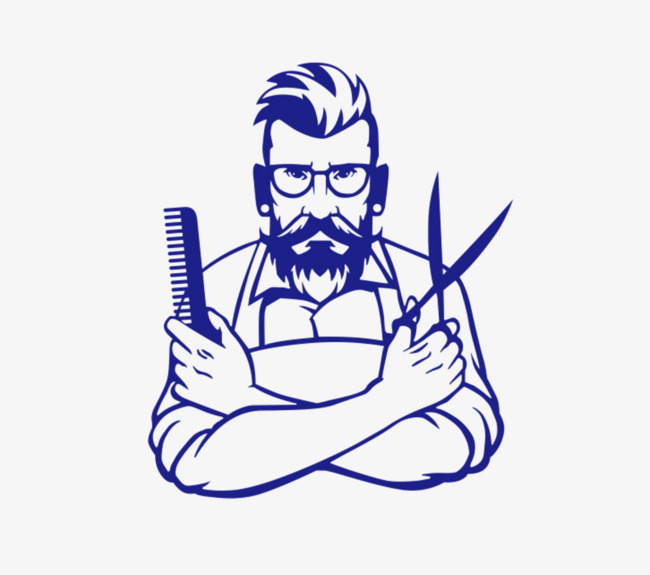

| Vinculo 1 | Vinculo 2 | Vinculo 3 | Vinculo 4 |
| Peluquería o barbería es un local donde se ofrecen varios servicios estéticos, principalmente el corte de pelo, pero también suelen realizarse otros como afeitado, depilado, manicura, pedicura, etc. Cuando se trata de muchos servicios diferentes suele llamarse salón de belleza. | Cortes de pelo para hombres 2018 | Cortes de cabello hay en estilos y en gran variedad para todos los gustos, y no tenemos porqué mentirnos, todos los hombres queremos tener un peinado con estilo y forma. |  |
| La referencia más antigua que se tiene sobre la existencia de los cuidados cosméticos en el pelo nos remite a Egipto, donde se empezaron a realizar los cambios más significativos en cuanto a la cosmética capilar. Los miembros de la elite gobernante, se dedicaba a cuidar su cabello jugando con diferentes peinados y tonalidades. |
Cortes de pelo; Mujeres |
||
Elementos pricipales |
Clases virtuales UGB |